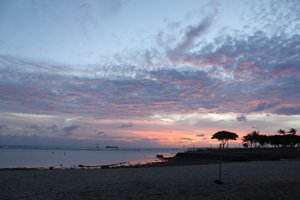
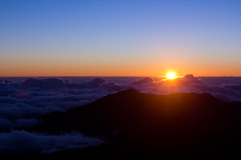

The best beaches in Hawaii include four beaches from each of the major islands - Hawaii Island (the Big Island), Kauai, Maui and Oahu. We also include two beaches on the island of Lana'i and one on Moloka'i.
Our list is presented in alphabetical order by island. We include several, less well-known, Hawaii beaches that we consider real gems.
If you enjoy this feature, you may also enjoy our Hawaii Beach Guide with even more information about the beaches in Hawaii.
'Anaeho'omalu Beach is located on 'Anaeho'omalu Bay and adjacent to the Waikoloa Beach Marriott Resort & Spa on the Big Island's Kohala Coast.
The beach area features beautifully landscaped walking paths from the resort that meander past ancient Hawaiian fishponds to a golden sand beach fringed by swaying palm trees. Sunsets here are amazing.

See an Active Volcano at Hawaii Volcanoes National Park. Located 30 miles south of Hilo and about 96 miles and a two-hour drive from Kailua-Kona, Hawaii Volcanoes National Park encompasses 333,000 acres and stretches from sea level to the summit of the earth's most massive volcano, Mauna Loa, 13,677 feet above sea level.
Included in the park is Kilauea, the world's most active volcano which has been in a constant state of eruption since January 2008. Depending on changing volcanic activity, you may have an opportunity to view an active lava flow from either within the park or from a viewing area outside the park operated by Hawaii County.
You'll want to start your visit at the Kilauea Visitor Center where you can obtain information on current lava conditions. From there you can drive to the Steam Vents, the Thurston Lava Tube, Hawaiian Volcano Observatory and Jaggar Museum and drive down Chain of Craters Road. Be sure to stop by the excellent Volcano Art Center.